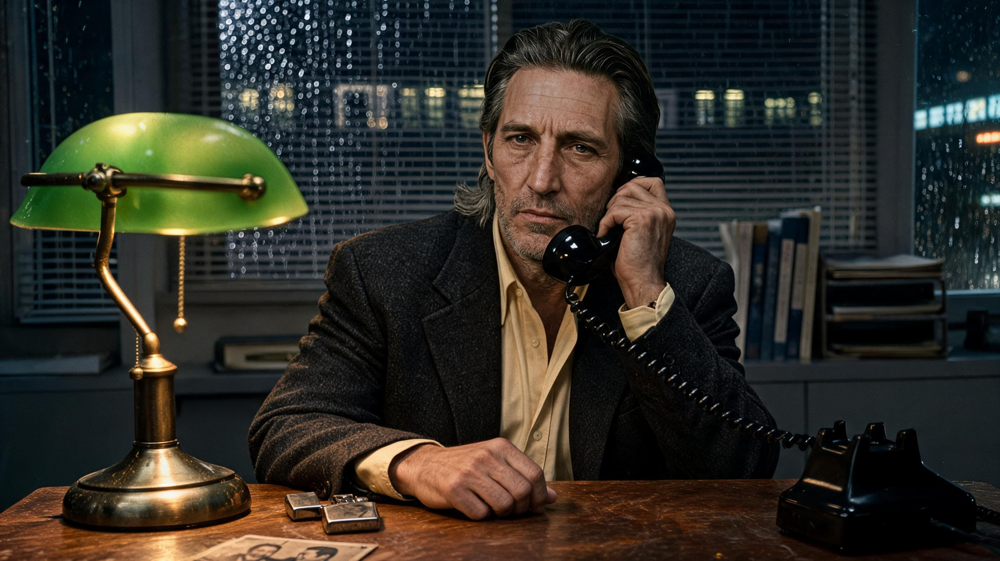
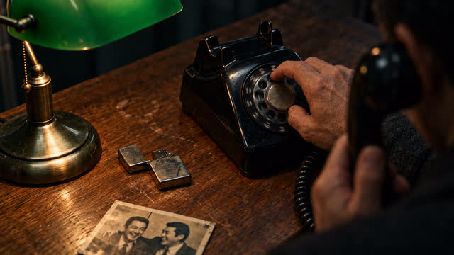
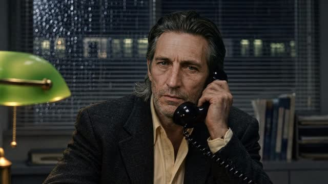

SHOT 01 · nw_s11 · nw_b297 (11.29s -> 2.29s + 9.00s)
Sakai — a gang matter
“Sakai. Yes. That Sakai. I know what you're thinking. Old debts, old enemies. It's a gang matter.”

Option 1 selected (2848×1600) · Saved to directory only · Open full-size image ↗
Surrounding frames


Prompt & references
Create ONE horizontal widescreen 16:9 photorealistic cinematic film still for the Tokyo noir drama Nobody's Witness at beat nw_b297, bridging the two supplied rainy-night office telephone references. Compose a wider medium side-angle shot at Jack's worn wooden office desk: middle-aged greying dark-haired Jack in his charcoal wool jacket and open-collar pale yellow shirt sits holding the black rotary telephone receiver to his ear, listening grimly in silence while his free hand rests on the desk beside the glowing green glass banker's lamp, the open silver flip lighter and the sepia photograph of the two laughing men from the first reference, with rain-beaded Venetian blinds behind him before the tighter frontal close-up in the second reference. Natural hands, restrained 35mm noir cinematography, full 16:9 landscape frame with headroom. No captions, subtitles, overlaid text or watermarks.
- Preceding shared still:
/film/img/s11/418-it-takes-a-long-time-to-dial.jpg - Following still:
/film/img/s11/419-twenty-years.jpg